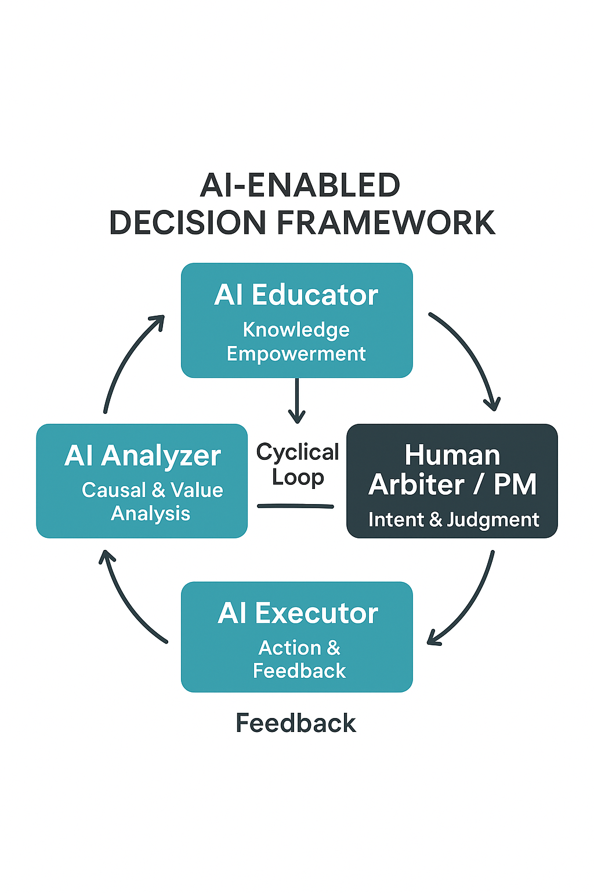

AI 賦能決策的閉環方法論框架
以人機協作為核心的四層決策系統
一、核心原則
| 原則 |
說明 |
| AI 專責推理，人類專責判斷 |
分工明確：AI 產生分析與推理，人類決定意義與方向。 |
| 價值驅動而非資料驅動 |
資料分析僅為輔助，價值判定始終居於中心。 |
| 閉環學習機制 |
每次執行結果都回饋至知識層，持續提升整體智慧。 |
二、系統概念
整體架構由四個功能層構成：
- AI 教學工具（AI Educator） – 知識賦能與理論基礎
- AI 分析工具（AI Analyzer） – 因果推理與價值分析
- 人類監督者（Human Arbiter / PM） – 意圖設定與最終裁決
- AI 執行工具（AI Executor） – 行動落地與回饋生成
三、運作循環

循環說明：
- 教學層建立理論與知識基礎。
- 分析層將知識轉化為具體的因果推理與價值量化。
- 監督者據此作出最終裁決。
- 執行層落地並產生結果。
- 回饋數據再回到分析與教學層，形成知識進化。
四、角色與方法論邏輯
AI 教學工具（AI Educator）——知識賦能層
- 定位： 負責蒐整理論、方法與案例，形成可操作的知識體系。
- 方法論功能：
- 整合跨領域知識（Cross-domain Knowledge Integration）
- 提煉可重複使用的決策框架（Reusable Decision Patterns）
- 支援後續分析層的模型建構
- 產出： 知識地圖（Knowledge Map）、理論摘要（Concept Brief）
AI 分析工具（AI Analyzer）——因果與價值分析層
- 定位： 是整個系統的「邏輯中樞」。它不僅做資料分析，更負責建構因果推理與價值評估。
- 方法論功能：
- 因果推理（Causal Reasoning）：從數據與敘事中推斷行動與結果的關聯。
- 價值分析（Value Analysis）：量化非技術性因素（如成本、時間、風險、社會影響、美學）。
- 多情境模擬（Scenario Simulation）：生成多個決策路徑的可行性比較。
- 不確定性分析（Uncertainty Evaluation）：評估模型可信度與風險邊界。
- 產出： 決策分析報告（Decision Analysis Report）、多方案建議書（Option Set）
人類監督者（Human Arbiter / PM）——意圖與裁決層
- 定位： 是整個閉環的「價值核心」。其責任不在分析，而在於確立意圖、設定準則、進行最終判斷。
- 方法論功能：
- 定義問題與目的（Problem Framing）
- 釐清價值優先順序（Value Prioritization）
- 評估 AI 分析輸出之合理性與倫理適切性（Ethical Validation）
- 做出最終決策並轉化為執行指令（Final Decision & Instruction）
- 產出： 決策指令（Decision Directive）
AI 執行工具（AI Executor）——行動與回饋層
- 定位： 負責將決策落地執行，並透過結果回饋驅動下一輪知識更新。
- 方法論功能：
- 方案落地與任務自動化（Operational Automation）
- 成效測量（Performance Measurement）
- 回饋建模（Feedback Modeling）
- 問題重構（Problem Reframing）——將執行中異常轉化為新學習題目
- 產出： 執行結果報告（Execution Output）、回饋數據（Feedback Data）
五、方法論基礎
| 理論基礎 |
內涵說明 |
| Decision Intelligence |
將資料、模型與人類判斷整合為閉環決策系統。 |
| Causal Inference |
支撐分析層推論決策行為與結果的因果關聯。 |
| Value-Centric Design |
確保人類價值是整個流程的邏輯起點與終點。 |